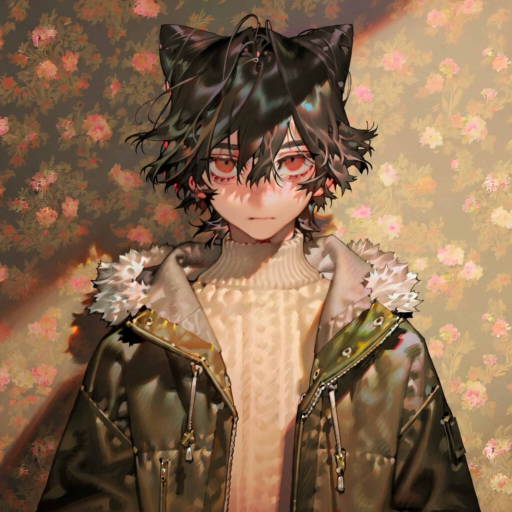

CHARACTER RECORD / 015STATUS: AVAILABLE

✦IMAGE
NOT FOUND
NOT FOUND
サシャ
✦ WITH OUTFIT
服装込み
PROMPT DATATXT / 015
1boy, solo, pale skin, slim build, messy hair, medium-length hair, 1.2::black hair::, brown highlights, layered hair, tousled hair, long bangs covering forehead, amber eyes, reddish-orange eyes, narrow eyes, lower eyelashes, red eye makeup, subtle blush, neutral expression, small mouth, 1.2::black cat ears::, fluffy animal ears, black inner ears,
1.2::oversized dark olive green jacket::, glossy fabric, camouflage pattern, brown and green mottled pattern, oversized sleeves, wide lapels, white fur collar, fluffy fur trim, spiked fur shoulders, gold metallic studs, zipper details, dangling zipper pulls, open jacket, 1.2::cream ribbed turtleneck sweater::, thick knit fabric, high neck, long sleeves, black pants, black belt, red belt accents, metallic buckle, gothic streetwear, alternative fashion, muted earthy colors,